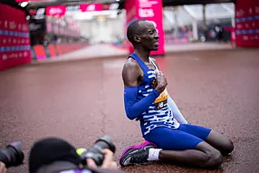

Atletismo
El fenómeno Kiptum se cita con la historia en un Maratón de Chicago en el que buscará el récord mundial
El keniano, de sólo 23 años, corre este domingo 8 de octubre su tercer maratón pero ya es el segundo hombre más rápido de la historia en la icónica distancia tras el mítico Eliud KipchogeMo Katir y Esther Guerrero, estrellas en la milla de Berango
Gran participación en una de las grandes pruebas de la especialidad del calendario nacional